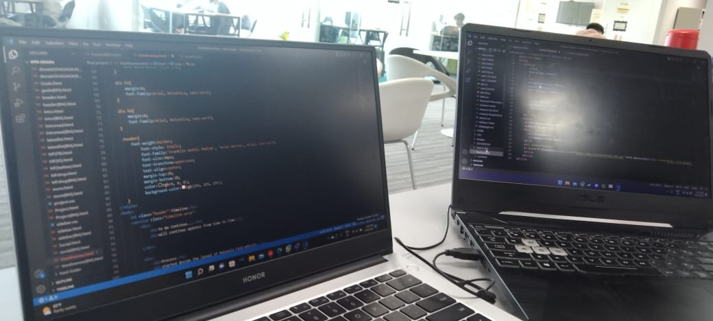

Untuk diteruskan...
akan meneruskan kemas kini dari semasa ke semasa
Proses
mula mereka bentuk susun atur laman web Dana Malaysia.
20/09/2022
Pengenalan
Perkenalkan Dana Malaysia di hadapan komuniti kecil.
15/09/2022
Nama laman web
MalaysiaFunds sebagai nama laman web kami.
13/09/2022
Perbincangan
Fungsi laman web dan
Matlamat
11/09/2022
